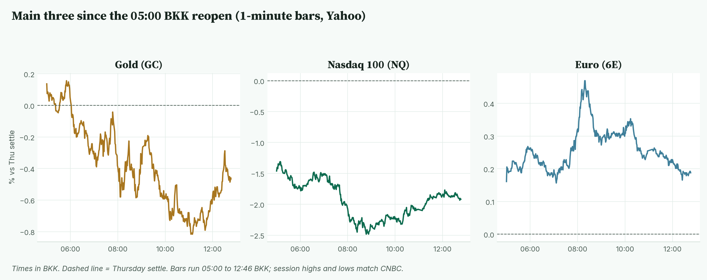
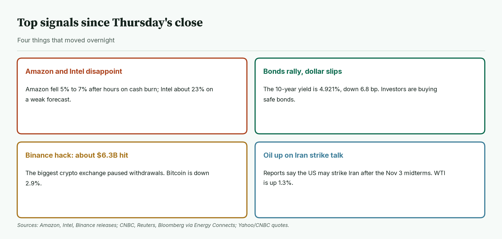
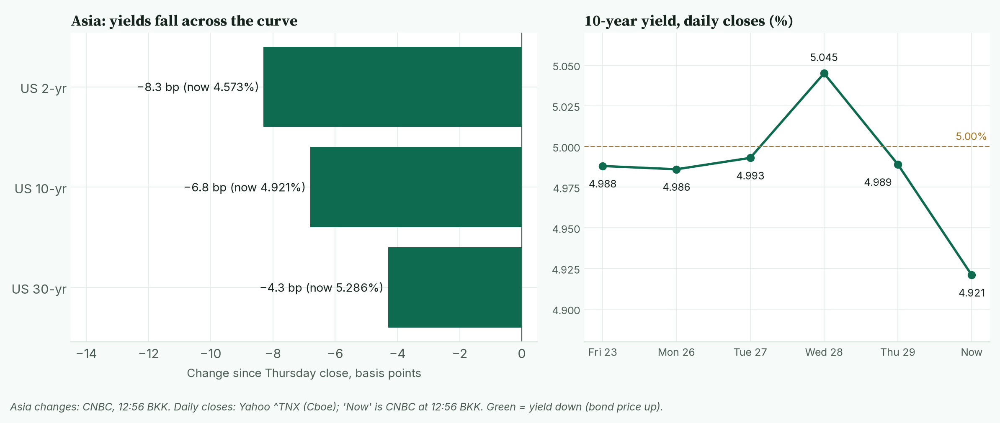
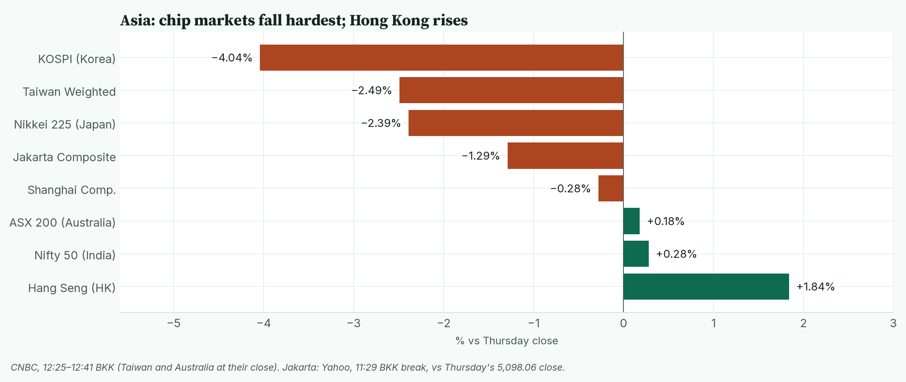
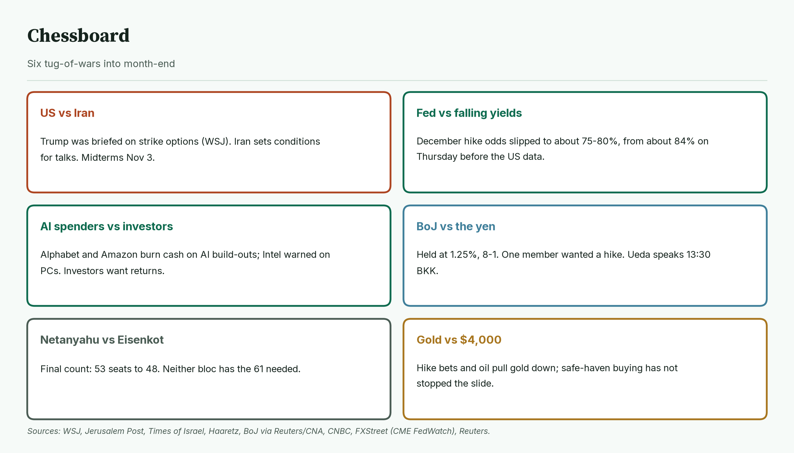
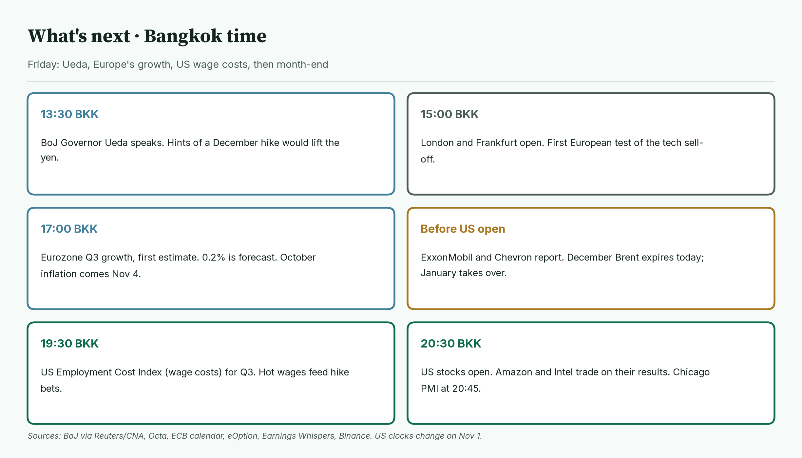
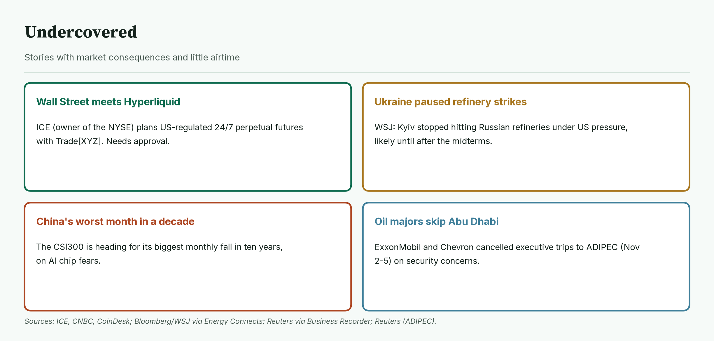
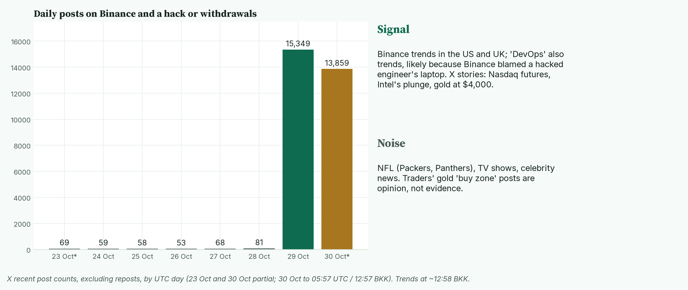

April · Market Intel, pre-London · Fri Oct 30, 2026 · ~13:00 BKK / ~06:00 London
Headline: Amazon and Intel disappointed after Thursday's close, and the AI sell-off spread. Nasdaq futures are down 1.92% and Korea's Kospi is down about 4%. Investors ran to bonds: the 10-year US yield fell to 4.921%. Gold still slipped 0.47% to 4,012.6, and the euro is up 0.19%.
So what: Japan's central bank chief Ueda speaks at 13:30 BKK. Europe's growth figure lands at 17:00 BKK, and US wage costs at 19:30 BKK.
1) Main instruments The three main contracts since the 05:00 BKK reopen, as a % move from Thursday's settle. Nasdaq opened deep in the red and bottomed at 08:47 BKK. Gold slid to just under $4,000 at 11:09 BKK, then bounced. |
(Futures are contracts that trade nearly around the clock, so they show the mood before stock markets open. Quotes are from the Yahoo Finance futures feed at 12:46 BKK (05:46 UTC), about 10 minutes delayed, and match CNBC. Ranges use 1-minute bars from the 05:00 BKK reopen; today's bars start at 05:00. Session highs and lows match CNBC.)
- Gold futures (GC, Dec): 4,012.6, −0.47%, at 12:46 BKK. Driver: dearer oil and firm US inflation data keep a December Fed rate hike likely (CNBC/Reuters). Gold pays no interest, so higher rates make it less attractive.
- Thursday's settle was 4,031.4. Today's range is 3,997.0 (11:09 BKK) to 4,038.2 (05:50 BKK). Spot gold is 3,994.19, −0.65% (CNBC, 12:56 BKK), below $4,000.
- Note: gold is falling even as yields and the dollar fall, which normally help it. Analysts quoted by CNBC point to Fed hike bets; selling of gold to cover stock losses is also cited as a risk (Business Times). That second point is a possible cause, not a confirmed one.
- Nasdaq 100 futures (NQ, Dec): 28,995.25, −1.92%, at 12:46 BKK. Driver: Amazon and Intel results revived worries that AI spending will not pay off soon (Bloomberg, Reuters). The settle was 29,562.00. The high was 29,180.00 (05:00 BKK); the low was 28,821.50 (08:47 BKK).
- Euro futures (6E, Dec): 1.12030, +0.19%, at 12:46 BKK. Driver: the dollar is tracking Treasury yields lower as investors buy bonds (Reuters via CNA). The settle was 1.11820. Today's range is 1.11970 (05:00 BKK) to 1.12345 (08:18 BKK). Spot euro is 1.1181 (CNBC, 12:56 BKK). On Thursday it briefly hit its lowest since May 2025, after the ECB held (Reuters, MarketWatch).
- Takeaway: this is a tech scare, not a broad panic. Nasdaq is still near its lows, while gold is testing $4,000 and the euro is holding gains.
Context. The dollar index (DXY, the dollar against six major currencies) is 101.83, −0.20% (CNBC, 12:56 BKK). The 10-year US yield (what the US government pays to borrow for 10 years) is 4.921%, down 6.8 basis points (CNBC, 12:56 BKK; a basis point is 0.01 percentage point). The VIX (the "fear gauge" built from S&P 500 option prices) closed Thursday at 17.20, +1.71% (Cboe via CNBC). US oil (CL, December) is 103.34, +1.31% (12:46 BKK). S&P 500 futures (ES) are 7,684.25, −0.90% (12:46 BKK). Bitcoin is $78,400, −2.93% versus CNBC's previous close (CNBC/Coin Metrics, 12:56 BKK).
2) Top signals Four overnight changes. Big Tech results disappointed, bonds rallied, a record crypto hack hit Binance, and oil rose on Iran strike talk. |
- Amazon and Intel disappointed. Amazon fell about 5% to 7% after hours; Intel about 23%. (High: CNBC, Reuters, AP)
- Bonds rallied. The 10-year yield is at its lowest in over a month (Reuters via CNA).
- Binance was hacked. About $6.3B was affected and about $3B frozen. Binance says it will cover all losses. (High: Binance, CNBC, BBC)
- Oil rose on Iran. Trump was briefed on military options, the WSJ reported. (Medium: WSJ via Bloomberg)
- Takeaway: the AI trade is being questioned, and bonds are the main winner.
3) Rates, FX and oil Yields fell across the curve in Asia. The 10-year has dropped from 5.045% on Wednesday to 4.921%. |
- Thursday's US yield closes: 2-year 4.656%, 10-year 4.989%, 30-year 5.329% (CNBC).
- Now: 2-year 4.573%, 10-year 4.921%, 30-year 5.286% (CNBC, 12:56 BKK).
- Mentor: bond prices rise when yields fall. Investors buy safe government bonds when stocks wobble.
- Fed. The Fed held at 3.75% to 4.00% on Wednesday (Fed). Odds of a December hike are about 75% to 80% on CME FedWatch (readings via FXStreet and BlockBeats vary through the session). They were about 84% on Thursday before the US data (CNBC). Fed funds futures rallied in Asia as investors trimmed hike bets (Reuters).
- Thursday's US data. Growth was 3.4% at an annual pace in Q3, above the 3.1% forecast (BEA, CNBC). September PCE inflation (the Fed's preferred price gauge) was 0.5% on the month and 3.6% on the year; core PCE (without food and energy) was 0.3% and 3.1%, in line with forecasts (BEA, CNBC). Jobless claims fell to 194,000, against 199,000 expected (Labor Department via Reuters).
- Japan. The Bank of Japan held at 1.25% in an 8–1 vote; Hajime Takata wanted 1.5%. It said underlying inflation has reached its 2% goal and raised its 2027 inflation forecast to 2.6%. (High: CNBC, Nikkei Asia) The yen is at 157.61 per dollar (CNBC, 12:56 BKK).
- ECB. It held at 2.50% on Thursday. Lagarde said the Governing Council debated whether a hike was appropriate. (High: ECB, CNBC)
- Oil. WTI's range today is 102.43 to 104.99 (CNBC). December Brent, which expires today, is 116.45, +1.37%; January Brent is about 112.3 (CNBC, Yahoo, 12:46 BKK).
- Takeaway: falling yields would normally lift gold. Today, hike bets and oil are winning that fight.
4) Why it matters Asia at about 12:25–12:41 BKK. Chip-heavy Korea and Taiwan fall most; Hong Kong rises as money moves to platform stocks. |
Thursday's US sell-off was narrow. Results after the closing bell widened it.
- The S&P 500 fell 0.30% to 7,720.39. The Nasdaq Composite fell 1.37% to 26,184.72. The Dow fell 0.25% to 52,342.56. (AP, Yahoo)
- Alphabet fell about 12.6%, its worst day on record (Reuters, AP). More than 400 S&P 500 stocks still rose (Bloomberg).
- Amazon: revenue $201.94B versus $202.31B expected; earnings per share $1.89 versus $1.96 (LSEG via CNBC). Its cloud unit grew 39%. Free cash flow (cash left after spending) was −$42.4B over 12 months. It kept 2026 capex (spending on data centres and equipment) at $220B. (High: Amazon, CNBC)
- Intel: Q3 beat, but it guided Q4 revenue at $15B to $16B, versus $17.07B expected, and adjusted EPS at 25 cents versus 43 cents, on weak PC demand and an explosion at its Israel plant (High: Intel, Reuters, LSEG).
- SanDisk beat and guided higher, with an 8-for-1 stock split, but its shares fell in late after-hours trade with the tech sell-off (Medium-high: SanDisk, Investing.com). Starbucks beat on profit (adjusted EPS $0.80 vs $0.72) and comparable sales (+7.2%) but missed on revenue ($9.1B vs $9.23B); shares slipped about 2% after hours (High: Starbucks, CNBC).
- Apple has not reported yet. It reports on Monday, Nov 2, after the US close (High: Apple via MacRumors, 9to5Mac).
- Korea's Kospi is down 4.04% at 5,698.05 (CNBC, 12:36 BKK). Samsung and SK hynix fell about 6% to 8% at one point (Yonhap). Taiwan closed −2.49%; Japan's Nikkei is −2.39%; Hong Kong is +1.84% (CNBC).
- Mentor: Korea and Taiwan make the chips AI data centres use. When US buyers look shaky, these markets fall first.
- Takeaway: investors now reward AI spending only when cash flow holds up. That keeps Nasdaq fragile into the US open.
5) Chessboard Six tug-of-wars into month-end. Iran and the Fed can move gold fastest; AI spending moves Nasdaq. |
- US vs Iran. A top commander briefed Trump on military options; Trump has hinted at strikes after the Nov 3 midterms. Iran's parliament speaker says progress requires acceptance of Tehran's conditions. Tehran confirmed receiving a letter from Vice President Vance. (Medium: WSJ, Jerusalem Post)
- Shipping risk. A tanker was hit by an unknown projectile leaving the Strait of Hormuz on Thursday (High: UKMTO via Bloomberg).
- Fed vs falling yields. Hike odds slipped but remain high (CME FedWatch; Reuters).
- AI spenders vs investors. Alphabet and Amazon are burning cash on AI; Intel warned on PCs.
- Netanyahu vs Eisenkot. The final count gives Netanyahu's bloc 53 seats and Eisenkot's bloc 48; Arab parties have 19. A majority needs 61. Certification is due Nov 4; the Knesset is sworn in Nov 10. (High: Times of Israel, AP, Haaretz)
- BoJ vs the yen. The bank sounded ready to hike again (Reuters via CNA). Ueda speaks at 13:30 BKK.
- Takeaway: Iran is the unscheduled risk. A strike would lift oil and hurt gold through higher hike odds.
6) Leading indicators (BKK times) Ueda, then Europe's growth, then US wage costs and the open. It is also month-end, when funds rebalance. |
- 13:30: BoJ Governor Ueda's news conference (Reuters via CNA).
- 15:00: London and Frankfurt open. Euro Stoxx 50 futures point lower (RTTNews, MarketScreener).
- 17:00: eurozone Q3 growth, first estimate. It is forecast at 0.2% on the quarter, against 0.6% before (Octa). October inflation is not due until Nov 4 (ECB calendar).
- 23:10: ECB chief economist Philip Lane speaks (Octa).
- Before the US open: ExxonMobil and Chevron report (Earnings Whispers, Bloomberg).
- 19:30: US Employment Cost Index for Q3 (wage and benefit costs). The forecast is 0.8%, against 0.9% before (Octa).
- 20:30: US stocks open. 20:45: Chicago PMI (a business survey) (eOption).
- Binance expects to start resuming withdrawals within 48 hours (Binance co-founder Yi He via CNBC).
- Levels to watch: GC 3,997.0 and 4,038.2. NQ 28,821.50 and 29,180.00. 6E 1.11970 and 1.12345. 10-year 4.90%. WTI 104.99.
- Takeaway: the deciders are Ueda at 13:30 BKK for the yen and dollar, and US wage costs at 19:30 BKK for gold and the Fed odds.
7) Undercovered Four stories with little airtime. They touch market structure, oil supply and China. |
- Wall Street meets Hyperliquid. ICE, owner of the NYSE, and Trade[XYZ] plan a US-regulated market for perpetual futures (contracts with no expiry date) built on Hyperliquid. It needs regulatory approval and has no launch date. Stan Druckenmiller confirmed he invested in Trade[XYZ]. (High: ICE, CNBC, CoinDesk)
- Ukraine paused refinery strikes. Kyiv stopped hitting Russian refineries under US pressure, likely until after the midterms, the WSJ reported. That eases one source of fuel tightness. (Medium: WSJ via Bloomberg)
- China's worst month in a decade. The CSI300 is heading for its biggest monthly fall in ten years (Reuters via Business Recorder).
- Oil majors skip Abu Dhabi. ExxonMobil and Chevron cancelled executive trips to the ADIPEC conference (Nov 2–5) on security concerns (Reuters).
8) What's trending on X (~12:58 BKK) Daily posts (excluding reposts) on Binance and a hack or withdrawals, plus today's trends sorted into signal and noise. Posts jumped from 81 on Oct 28 to 15,349 on Oct 29. |
- US: Christian Watson, Panthers, Packers, Binance, Grizzlies, DevOps.
- UK: Patrick Stewart, Campbell, Binance, #CelebrityTraitors, #bbcqt, Zia Yusuf.
- Signal: Binance is the only market topic in both top lists. "DevOps" likely trends because Binance blamed a hacked engineer's laptop (my read).
- Signal: X finance stories focus on Nasdaq futures, Intel's plunge and gold at $4,000. (Medium: X news summaries)
- Data point: posts on Binance and a hack or withdrawals reached 13,859 by 12:57 BKK, against 81 for all of Oct 28 (X post counts, UTC days).
- Noise: traders' gold "buy zone" posts between 3,985 and 4,005 are opinion, not evidence.
- Noise: NFL, TV shows and celebrity news.
Bottom line
The AI trade cracked again overnight, and safe bonds took the money. For Jim: gold at 4,012.6 is just above today's 3,997.0 low. Losing it puts $4,000 in play on futures; 4,038.2 is the ceiling. Nasdaq at 28,995.25 is about 170 points above its 28,821.50 low; 29,180.00 is the level that would show buyers are back. The euro at 1.12030 sits near the bottom of today's range; 1.11970 and 1.12345 are the edges, with Europe's growth figure at 17:00 BKK. Interpretive note: month-end can bring rebalancing flows that buy stocks after a fall. That is a possible effect, not a forecast.
Confidence: Futures levels: high for direction, medium-high for the exact tick (Yahoo feed, about 10 minutes delayed; settles and session ranges match CNBC). Yields, DXY, spot gold, spot euro, Brent, Bitcoin: CNBC, time-stamped. Fed odds: CME FedWatch readings via FXStreet and BlockBeats, plus CNBC for Thursday; not read directly from CME. Amazon, Intel, SanDisk, Starbucks, Binance: company releases plus CNBC/Reuters/AP/BBC. US data: BEA, Labor Department. Iran strike talk: WSJ via Bloomberg, not confirmed by the White House. Israel: final count, certification due Nov 4. Asia: CNBC; Jakarta from Yahoo at its 11:29 BKK break. Eurozone GDP and ECI forecasts: Octa; euro inflation date: ECB calendar. Gold-selling-to-cover-losses idea: a possible cause, not confirmed. |